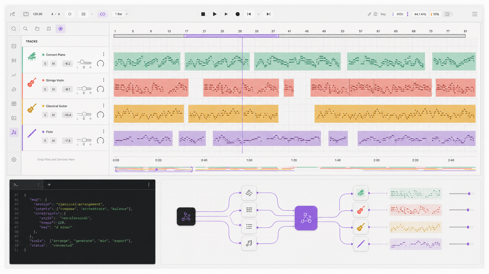

01
Arrangement & MIDI
Create tracks and clips, import MIDI, edit notes, quantize, humanize, apply grooves, and add locators.
Open-source music production connector
Inspect, arrange, and produce inside Ableton Live from an MCP-compatible AI client, with local-only transport, explicit risk tiers, and evidence before broad changes.

System boundary
The public MCP process never embeds itself in Live. A small Remote Script adapter translates local HTTP requests into Live API operations and keeps DAW-specific logic behind focused helpers.
Production surface
The connector exposes inspection and controlled writes across arrangement, MIDI, devices, routing, mixer state, snapshots, and production diagnostics.
01
Create tracks and clips, import MIDI, edit notes, quantize, humanize, apply grooves, and add locators.
02
Inspect and change track, return, and master controls with explicit dB, pan, send, and routing contracts.
03
Search Live's indexed browser, load instruments and effects, inspect parameters, and automate exposed controls.
04
Classify action risk, create snapshots, verify writes, report unsupported operations, and roll back covered state.
05
Inspect the project and arrangement, diagnose playback and plugins, and analyze current rendered WAV files locally.
06
Use production reports, endpoint support, bridge health, and workflow plans to decide what is safe before writing.
Quick start
Install the package, copy the bundled Remote Script, select it in Live, then add the stdio server to your MCP client.
Step 1
npx -y @jterrats/ableton-live-mcp --helpStep 2
npx -y @jterrats/ableton-live-mcp install-remote-script \
--app-path "/Applications/Ableton Live 12.app"Step 3
{
"mcpServers": {
"ableton-live": {
"command": "npx",
"args": ["-y", "@jterrats/ableton-live-mcp"],
"env": {
"ABLETON_BRIDGE_URL": "http://127.0.0.1:9789"
}
}
}
}Restart Live and select AbletonMcpBridge under Settings → Link, Tempo & MIDI. The bridge listens on loopback only.
Operating model
Read first. Snapshot before broad writes. Verify the value Live reports after each change. Stop when the active bridge marks a capability unreliable or unsupported.
Current boundaries
Capabilities depend on what Ableton Live exposes to the active Remote Script and what the installed edition indexes.
Build in the open
Read the implementation, report a bridge mismatch, or help extend the Live adapter.